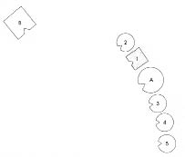
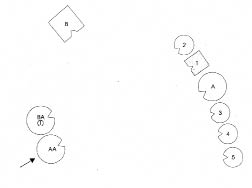
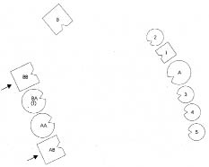
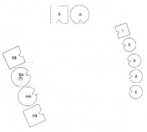
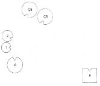
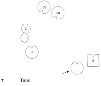

Uzun yağmurlar en sonunda büyük bir taşkına dönüştüğünde hahamın biri evinin çatısına çıkıp Tanrıya kendisini kurtarması için dua etmeye koyulmuş. Üzerinden fazla zaman geçmemiş ki bir adam kurtarmak için ona doğru kürek çekerek sandalıyla yaklaşmış. Ama haham, “Tanrı beni kurtarır” diyerek uzaklaştırmış onu.
Derken bir kurtarma helikopteri gelmiş. Ama onu da göndermiş haham. Sonunda boğulmuş.
Huzuruna gelip de Tanrıya kendisini kurtarmadığı için yakınınca “Sana bir sandal gönderdim” demiş Tanrı, “Bir de helikopter.”
HELLINGER Thomas’a Tamam, şimdi diz!
1. Resim

B Baba
A Anne
1 İlk çocuk, oğlan (=Thomas)
2 İkinci çocuk, kız
3 Üçüncü çocuk, kız
4 Dördüncü çocuk, kız
5 Beşinci çocuk, kız
HELLINGER Temsilcilere Hepiniz kime kızgınsınız?
İKİNCİ ÇOCUK Babaya mı?
HELLINGER Hayır.
Thomas’a Tanrıya. -Bu Tanrı kadın mı, erkek mi?
THOMAS Emin değilim. Anlaşılacak gibi değil.
HELLINGER Tanrı bir sistemde göründüğünde bu gerçekte her zaman sistem dışında biridir.
THOMAS O halde bir erkek.
HELLINGER Ben o kadar emin değilim. Pekâlâ, başlayalım. Baba nasıl?
BABA Berbat. Boşluğa bakıyorum ve onlarla hiçbir ilgim yok.
HELLINGER Doğru, lütuf işe yaramamış.
Anne nasıl?
ANNE Tek kelimeyle korkunç. Kesinlikle korkunç!
HELLINGER Thomas’ın temsilcisine Oğul nasıl?
İLK ÇOCUK İyi değilim. Buradan gitmek istiyorum.
İKİNCİ ÇOCUK Üstümde aşırı bir yük hissediyorum. Kendimi bekar bir anne gibi hissediyorum.
ÜÇÜNCÜ ÇOCUK Ben kendimi burada fırtınadan uzak bir köşede gibi hissediyorum.
DÖRDÜNCÜ ÇOCUK Ben yalnızca hiçbir şey hissetmemekten dolayı iyiyim. Daha fazla söyleyecek bir şeyim yok.
HELLINGER Thomas’a Bana biraz babanın ailesinden söz et.
THOMAS Babam en büyük oğul. Yedi kardeşi vardı. Bir mağazası vardı. Aslında annemin babasına ait bir mağaza, evlendiğinde devraldı. Annem geçmişte olduğu gibi bugün de oranın baş kişisi.
HELLINGER Dört çocuk dışında belirleyici olaylar yaşandı mı?
THOMAS Bir halam veremden öldü. En küçük kardeşleri ikizdi. Onlardan biri merdivenden düşüp ölmüş. Babaannem eşinin rahip olmasını istemiş ama babasının babası buna engel olmuş.
HELLINGER Babasının babası mı engel olmuş?
THOMAS Babamın babası da kendisi gibi rahip olmak istemiş ama ona babası engel olmuş. Rahiplik isteği annelerden geliyormuş anlaşılan, babalar ya da o baba ise engel olmuş.
HELLINGER Tamam. -Şimdi Tanrı erkek mi, kadın mı?- Dizime bir ekleyelim bakalım.
THOMAS Kimi?
HELLINGER Bu Tanrıyı. Kim olabilir o?
THOMAS Ben bir kadın seçerdim.
HELLINGER Evet, Tanrı için bir kadın seç.
Gruba Korkmanıza gerek yok. Burada her zaman insanca bir rol söz konusu.
2. Resim

T Tanrı
HELLINGER Ne değişti?
İLK ÇOCUK Biraz rahatladım.
ÜÇÜNCÜ ÇOCUK Orada neler olduğunu bilmiyorum, zaten bana da bakmıyor (Tanrı).
HELLINGER Ama enerji düzeyi yükseldi. -Baba nasıl?
BABA Bu Tanrıyla bir alıp vereceğim olsun istemiyorum.
HELLINGER Evet, ortaya çıktığında pek az insan onunla bir işi olsun ister.
BABA Üzerimde baskı yapıyor. Beni çok tedirgin ediyor. Gitmek istiyorum.
ANNE Onun (Tanrının) boynunu kırabilirim.
TANRININ TEMSİLCİSİ (THEA) Thomas’ın beni seçeceğini biliyordum, çünkü tehditkâr roller sıklıkla bana düşüyor.
HELLINGER Özür dilemene gerek yok. -Bu rolde kendini nasıl hissediyorsun?
TANRININ TEMSİLCİSİ İyi değil.
HELLINGER Enerji nereye yöneliyor?
TANRININ TEMSİLCİSİ Boşluğa, dosdoğru oraya.
HELLINGER Thomas’a Bu tam olarak hangi kadın ve nereye bakıyor?
THOMAS Aklıma birisi geldi: Bizimle yaşayan diğer büyükannem.
HELLINGER Anneannen mi? -Ne olmuştu ona?
THOMAS Ölü bir çocuk doğururken az daha kendi canından da oluyormuş. Daha sonra annemi dünyaya getirmiş.
HELLINGER Onu da dizelim. Diğer kadının yanına yerleştir. Tanrıyı şimdi babaanne olarak kabul edeceğiz, olasılıkla öyleydi.
3. Resim
BA Babaanne
AA Anneanne
İKİNCİ ÇOCUK Enerji olağanüstü ölçüde yükseldi.
İLK ÇOCUK Bunu bir parça ben de hissediyorum ama doğru olan o değil.
HELLINGER Thomas’a Tanrının gücü elinden nasıl alınıyor? -İki erkek tarafından. İki büyükbabayı da yerleştirelim mi? Her birini, gücünü elinden aldığı kendi karısının yanına yerleştir.
4. Resim

BB Babanın babası
AB Annenin babası
İLK ÇOCUK Gittikçe daha iyi oluyor.
BABA Böyle çok daha rahat.
İKİNCİ ÇOCUK Çok daha az tehlikeli.
HELLINGER Evet, doğru. Çünkü tehlikeli olan kadınlar. Erkeklerse yaşamı ve yeryüzünü destekliyor.
İKİNCİ ÇOCUK Yeryüzünü mü?
HELLINGER Çok tuhaf bir biçimde yeryüzünü. Çocuklar tehlike içinde olduğunda, sözgelimi intihar tehlikesi, hemen her zaman babalarının yanında daha güvendedirler.
BABA Büyükbabalar da geldiğinden bu yana büyük bir rahatlama oldu.
HELLINGER Git, karını al şimdi!
Baba ellerini çırparak karısının yanına gider, kolunu kadının omzuna dolayarak onun yanına geçer. Kadın gülerek onunla gider. Bu arada büyük kız kardeşleri erkek kardeşlerinin soluna geçer.
5. Resim

HELLINGER Anne ve babanın ebeveynine Siz nasılsınız?
BABAANNE Ben iyiyim.
BABANIN BABASI Ne iyi ne kötü. Her şey yolunda.
ANNEANNE Şimdi kendimi iyi hissediyorum.
ANNENİN BABASI Hayır duam onlarla.
ANNE Büyükbabalar geldiğinde ellerimin titremesi geçti, avuçlarım şimdi sıcacık.
HELLINGER Bir seferinde babası papaz olan bir kadının sistemini dizmiştim. Papaz ailelerinde her zaman Tanrının da dizime katılması gerekir. Kadının senaryo hikâyesi [10] “Yaşlı kadının ziyareti” idi. Kadın kişileri dizdiğinde bir yanda kadın, çocukları ve çocukların bakıcıları vardı, baba yalnız başına duruyordu.
Örnek: 1. Resim

B Baba
A Anne
1 İlk çocuk, kız (=Danışan)
2 İkinci çocuk, kız
ÇB Çocuk bakıcısı
HELLINGER Bu ailede Tanrı kadın mı, erkek mi diye sordum. Danışan, “kadın” diye yanıtladı. Tanrıyı dizime öylece ekledik ve bu da “Yaşlı kadının ziyareti” idi.
Örnek: 2. Resim

T Tanrı
HELLINGER Tanrının böyle bir ailede görünmesi her zaman korkunçtur. Bu ailelerde Tanrı yaşamın düşmanı ve hemen her zaman bir kadındır. Erkek olarak göründüğünde yaşam düşmanı değildir.
BABAANNE (TANRI) Burada yalnız başıma dururken birden, bütün saldırganlığın ve mekanda yaşanan her şeyin bana yoğunlaştığı duygusuna kapıldım.
HELLINGER Erkeklerin olması ne kadar iyi, görüyor musun!
Thomas’a Sanıyorum durumu açıklayabildim. Kendi yerini almak ister misin?
Thomas dizimdeki yerini alır ve onaylayan bakışlarla çevresine bakar.
HELLINGER Bu dizimde çalışmayı en önemli nokta ile sınırladım; bu da bu durumda bütünüyle yeterli. Tamam mı?
Thomas başıyla onaylar.
HELLINGER Pekâlâ, bu kadar.